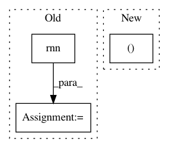

ae72ea0bfe7f7041d6f7580427fa1f69158bab7e,tests/keras/backend/backend_test.py,TestBackend,test_rnn_no_states,#TestBackend#,665
Before Change
rnn_fn = rnn_step_fn(k)
inputs = k.variable(input_val)
initial_states = []
last_output, outputs, new_states = k.rnn(rnn_fn, inputs,
initial_states,
go_backwards=False,
mask=None)
last_output_list.append(k.eval(last_output))
outputs_list.append(k.eval(outputs))
assert len(new_states) == 0
After Change
output_dim = 4
timesteps = 5
_, x = parse_shape_or_val((32, timesteps, input_dim))
_, wi = parse_shape_or_val((input_dim, output_dim))
x_k = K.variable(x)
In pattern: SUPERPATTERN
Frequency: 3
Non-data size: 3
Instances
Project Name: keras-team/keras
Commit Name: ae72ea0bfe7f7041d6f7580427fa1f69158bab7e
Time: 2018-03-05
Author: me@taehoonlee.com
File Name: tests/keras/backend/backend_test.py
Class Name: TestBackend
Method Name: test_rnn_no_states
Project Name: OpenNMT/OpenNMT-py
Commit Name: ff010950b519bbcccc14f82abcfd9b5697be1b44
Time: 2017-01-08
Author: alerer@fb.com
File Name: OpenNMT/onmt/Models.py
Class Name: Encoder
Method Name: forward
Project Name: keras-team/keras
Commit Name: 1c221934aaeab20ed5b6fa245b33b00a8b557533
Time: 2018-11-29
Author: andhus@kth.se
File Name: tests/keras/backend/backend_test.py
Class Name: TestBackend
Method Name: test_rnn_no_states